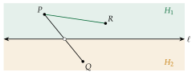
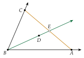
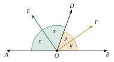
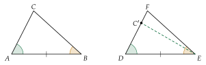
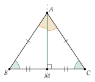
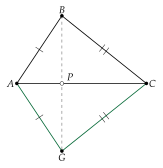
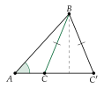

Institute of Mathematics
Measuring: distance, order and angles
This week
- 2.2Distance, order and the real line
- 2.3Angles
- 2.4Perpendicularity and angle bisector
- 2.5Congruence and parallelism: what comes next
- 3.1The triangle and its elements
- 3.2Triangle congruence
By the end of the week we will be able to
- Use the ruler postulate to talk about distance and “betweenness”.
- Measure angles and use linear pairs and vertical angles.
- Construct perpendiculars and angle bisectors, and prove they are unique.
- Recognize the triangle congruence criteria.
Distance, order and the real line
Postulate 2.2.1 · Distance postulate
§2.2 Distance, order and the real lineTo each pair of points A, B there corresponds a unique real number AB≥0, called the distance between A and B, such that AB=BA, and AB=0 if and only if A=B.
Postulate 2.2.2 · Ruler postulate
§2.2 Distance, order and the real lineFor each line ℓ there is a bijection f:ℓ→R such that, for all points P and Q of ℓ, PQ=∣f(P)−f(Q)∣. Such an f is called a coordinate system or ruler on ℓ, and f(P) is the coordinate of P. Moreover, given two distinct points O and A of ℓ, the ruler can be chosen so that f(O)=0 and f(A)>0 (ruler placement).

Distance, order and the real line
§2.2 Distance, order and the real lineThe ruler postulate says that every line is a copy of the real line. It implies, for example, that every line has infinitely many points and that between two points there is always another one. It also contains a form of the continuity postulate: the line has no “holes”, because every real number, including 2 or π, corresponds to a point.
Definition 2.2.3 · Betweenness
§2.2 Distance, order and the real lineWe say that the point B is between A and C, and we write A−B−C, if A, B and C are distinct collinear points and AB+BC=AC.
Theorem 2.2.4 · Order on a line
§2.2 Distance, order and the real lineLet A, B, C be distinct points of a line with coordinates a, b, c. Then A−B−C if and only if a<b<c or c<b<a. Consequently, of three distinct points of a line, exactly one is between the other two.
(⇐) If a<b<c, then AB+BC=(b−a)+(c−b)=c−a=AC. The case c<b<a is the same.
Theorem 2.2.4 · Order on a line (continued)
§2.2 Distance, order and the real line(⇒) Suppose ∣b−a∣+∣c−b∣=∣c−a∣ and, without loss of generality, a<c (otherwise we swap the names of A and C). If b<a, we would have ∣b−a∣+∣c−b∣=(a−b)+(c−b)=(c−a)+2(a−b)>c−a, a contradiction; likewise b>c is impossible. Since b=a and b=c, we are left with a<b<c.
Finally, three distinct real numbers can be ordered in a unique way, and exactly one of them lies in the middle.
Definition 2.2.5 · Segment, length and midpoint
§2.2 Distance, order and the real lineLet A=B.
The segment AB is the set formed by A, B and all the points between A and B. The points A and B are its endpoints.
The length or measure of AB is the number AB.
A point M is a midpoint of AB if M∈AB and AM=MB.
Two segments are congruent, AB≅CD, if AB=CD.
Theorem 2.2.6 · Existence and uniqueness of the midpoint
§2.2 Distance, order and the real lineEvery segment has exactly one midpoint.
Choose a ruler on AB with f(A)=0 and f(B)=b>0.
Existence. Let M be the point with coordinate 2b (it exists because the ruler is a bijection). Since 0<2b<b, Theorem 2.2.4 gives A−M−B, and AM=2b=MB.
Uniqueness. If M′ is a midpoint with coordinate m, then 0<m<b (because M′ is between A and B), and AM′=M′B reads m=b−m. Hence m=2b and M′=M, because the ruler is injective.
Interactive The ruler: coordinates and midpoint
§2.2 Distance, order and the real lineDrag A and B along the line. The distance is |b − a| and the midpoint is (a + b)/2.
Theorem 2.2.7 · Segment construction
§2.2 Distance, order and the real lineLet OA be a ray and d>0 a real number. There is exactly one point P on OA such that OP=d.
Distance, order and the real line
§2.2 Distance, order and the real line(Rays are defined right below; the proof is like the one for the midpoint: place the ruler with f(O)=0, f(A)>0 and take the point with coordinate d.)
Definition 2.2.8 · Ray and open ray
§2.2 Distance, order and the real lineLet O=A.
The ray OA is the set of points P of OA such that O is not between P and A. Equivalently, with a ruler in which f(O)=0 and f(A)>0, it is the set of points with coordinate ≥0. The point O is the origin of the ray.
If O is between A and B, the rays OA and OB are opposite rays.
The open ray OA˚ is the ray without its origin: OA∖{O}.

Definition 2.2.9 · Convex figure
§2.2 Distance, order and the real lineA figure (a set of points) F is convex if for every pair of points P,Q∈F the segment PQ is contained in F.

Theorem 2.2.10 · Intersection of convex sets
§2.2 Distance, order and the real lineThe intersection of two convex figures is convex.
Let F and G be convex, and P,Q∈F∩G. Since P,Q∈F and F is convex, PQ⊆F; likewise PQ⊆G. Hence PQ⊆F∩G. (If the intersection is empty or has a single point, the condition holds trivially.)
Convex figures and plane separation
§2.2 Distance, order and the real lineLines, rays and segments are convex (this follows from Theorem 2.2.4). The next postulate says that a line splits the plane into two convex “halves”.
Postulate 2.2.11 · Plane separation
§2.2 Distance, order and the real lineLet ℓ be a line contained in a plane α. The points of α not on ℓ form two sets H1 and H2, called half-planes with edge ℓ, such that:
H1 and H2 are convex and disjoint;
if P∈H1 and Q∈H2, the segment PQ meets ℓ.
If two points lie in the same half-plane we say they are on the same side of ℓ; otherwise, that they are on opposite sides.

Theorem 2.2.12 · Pasch’s theorem
§2.2 Distance, order and the real lineLet A, B, C be three noncollinear points and ℓ a line in the plane they determine that passes through none of the three. If ℓ meets the segment AB, then it also meets AC or BC.
Since ℓ meets AB at a point other than A and B, the points A and B are on opposite sides of ℓ (if they were on the same side, by convexity of the half-plane the whole segment would lie in it and would not meet ℓ).
The point C is not on ℓ, so it lies in one of the two half-planes.
If it is on the side opposite to A, the segment AC meets ℓ; if it is on the side opposite to B, the segment BC meets ℓ.
One of the two things must happen, because A and B are on different sides.
Convex figures and plane separation
§2.2 Distance, order and the real lineThis is exactly the fact Euclid used without stating it: a line that “enters” a triangle through one side “leaves” through another.
Angles
Definition 2.3.1 · Angle
§2.3 AnglesAn angle is the union of two rays with the same origin that do not lie on the same line. The rays are the sides of the angle and the common origin is its vertex. The angle formed by BA and BC is denoted ∠ABC (with the vertex in the middle) or simply ∠B if there is no ambiguity.
Definition 2.3.2 · Interior of an angle
§2.3 AnglesThe interior of the angle ∠ABC is the intersection of the half-plane with edge BA containing C and the half-plane with edge BC containing A. Its exterior is the set of points of the plane that are neither on the angle nor in its interior.

Postulate 2.3.3 · Protractor postulate
§2.3 AnglesMeasure. To each angle ∠ABC there corresponds a unique real number m∠ABC, its measure in degrees, with 0<m∠ABC<180.
Construction. Let BA be a ray on the edge of a half-plane H. For each number r with 0<r<180 there is exactly one ray BP, with P∈H, such that m∠ABP=r.
Addition. If D is in the interior of ∠ABC, then m∠ABD+m∠DBC=m∠ABC.
Supplement. If ∠ABD and ∠DBC form a linear pair (next definition), then m∠ABD+m∠DBC=180.
Angles
§2.3 AnglesWe will write measures with the degree symbol: m∠ABC=35∘. When there is no room for confusion we will write ∠A=35∘.
Definition 2.3.4 · Classification and congruence of angles
§2.3 AnglesAn angle is acute if it measures less than 90∘, right if it measures 90∘ and obtuse if it measures more than 90∘. Two angles are congruent, ∠A≅∠B, if they have the same measure.
Remark
§2.3 AnglesSince congruence of segments and congruence of angles are defined by equality of numbers, both are equivalence relations: reflexive, symmetric and transitive. This is used constantly without mention.
Definition 2.3.5 · Pairs of angles
§2.3 AnglesTwo angles are adjacent if they have the same vertex, a common side, and disjoint interiors.
Two angles form a linear pair if they are adjacent and their non-common sides are opposite rays.
Two angles are supplementary if their measures add up to 180∘, and complementary if they add up to 90∘.
Two angles are vertical angles if the sides of one are the opposite rays of the sides of the other.
Theorem 2.3.6 · Vertical angles
§2.3 AnglesVertical angles are congruent.
Let ∠AOC and ∠BOD be vertical angles, with OB opposite to OA and OD opposite to OC.
The angles ∠AOC and ∠COB form a linear pair, and so do ∠COB and ∠BOD.
By the supplement postulate (T4), m∠AOC+m∠COB=180∘=m∠COB+m∠BOD, and canceling m∠COB we get m∠AOC=m∠BOD.
Interactive Vertical angles
§2.3 AnglesDrag the points to rotate the two lines. Angles of the same color are always equal.
Theorem 2.3.7 · Supplements and complements of congruent angles
§2.3 AnglesIf two angles are congruent, their supplements are congruent, and their complements (when they exist) are congruent.
If m∠A=m∠B and ∠A′, ∠B′ are respective supplements, then m∠A′=180∘−m∠A=180∘−m∠B=m∠B′. The same with 90∘.
Theorem 2.3.8 · Crossbar theorem
§2.3 AnglesIf D is in the interior of ∠ABC, then the ray BD meets the segment AC at a point between A and C.
Let E be a point such that B is between C and E.
We apply Pasch’s postulate to the triangle △AEC and the line BD: it meets EC at B, so it meets AC or AE.

Theorem 2.3.8 · Crossbar theorem (continued)
§2.3 AnglesUsing plane separation we rule out that it meets AE and that the intersection point with AC lies on the ray opposite to BD: the points of AE other than A and those of the opposite ray lie in the half-plane with edge BC not containing A, or in the one with edge BA not containing C, while D lies in the other two.
The details are a good exercise in using the separation postulate.
Angles
§2.3 AnglesThe crossbar theorem looks obvious, and it is in the picture. Its role is to guarantee that the points we “see” in figures really exist; we will use it, for example, to make sure that the bisector of an angle of a triangle meets the opposite side.
Perpendicularity and angle bisector
Definition 2.4.1 · Perpendicular lines
§2.4 Perpendicularity and angle bisectorTwo lines are perpendicular, ℓ⊥m, if they meet forming a right angle. Two segments or rays are perpendicular if the lines containing them are.
Theorem 2.4.2 · The four right angles
§2.4 Perpendicularity and angle bisectorIf two lines meet forming a right angle, the four angles they form are right angles. Conversely, if two intersecting lines form a linear pair of congruent angles, they are perpendicular.
If one of the angles measures 90∘, the two adjacent to it form linear pairs with it and measure 180∘−90∘=90∘ (T4); the fourth is vertical to the first and measures 90∘ by Theorem 2.3.6. For the converse: if ∠1≅∠2 form a linear pair, 2m∠1=180∘, so m∠1=90∘.
Theorem 2.4.3 · Perpendicular through a point of the line
§2.4 Perpendicularity and angle bisectorIn a plane, through each point of a line there passes exactly one line perpendicular to it.
Let P∈ℓ and let A be another point of ℓ. By the construction postulate (T2), in a half-plane H with edge ℓ there is exactly one ray PQ with m∠APQ=90∘; the line PQ is perpendicular to ℓ. If m is another perpendicular to ℓ through P, one of its rays with origin P lies in H and forms with PA an angle of 90∘; by the uniqueness in T2 that ray is PQ, so m=PQ.
Definition 2.4.4 · Angle bisector
§2.4 Perpendicularity and angle bisectorThe ray BD is the bisector of the angle ∠ABC if D is in the interior of ∠ABC and ∠ABD≅∠DBC.
Theorem 2.4.5 · Existence and uniqueness of the bisector
§2.4 Perpendicularity and angle bisectorEvery angle has exactly one bisector.
Let m∠ABC=r. Existence. By T2 there is a ray BD with D on the same side of BA as C and m∠ABD=2r. We must check that D is in the interior of ∠ABC, that is, that it is also on the same side of BC as A. If not, C would be in the interior of ∠ABD and by T3 we would have m∠ABD=m∠ABC+m∠CBD>r, against m∠ABD=2r. Then, by T3, m∠DBC=r−2r=2r=m∠ABD.
Uniqueness. If BD′ is another bisector, D′ is on the side of C with respect to BA and, by T3, m∠ABD′=2r. By the uniqueness in T2, BD′=BD.
Example 2.4.6 · The bisectors of a linear pair are perpendicular
§2.4 Perpendicularity and angle bisectorLet ∠AOD and ∠DOB be a linear pair, with bisectors OE and OF. If m∠AOD=2x and m∠DOB=2y, then 2x+2y=180∘ by T4, and m∠EOF=m∠EOD+m∠DOF=x+y=90∘. (That D is in the interior of ∠EOF follows from the fact that E and F are on opposite sides of OD.)

Congruence and parallelism: what comes next
Congruence and parallelism: what comes next
§2.5 Congruence and parallelism: what comes nextSo far we have three of the five families of postulates: incidence, order (contained in the ruler postulate, plane separation and the protractor) and continuity (contained in the fact that coordinates run through all real numbers). The other two families appear in the next chapter:
the SAS congruence postulate, which says when two triangles are “copies” of each other;
the parallel postulate, in Playfair’s form: through a point not on a line there passes at most one line parallel to it.
The fifth postulate
§2.5 Congruence and parallelism: what comes nextEuclid’s fifth postulate said, in modern language, that if a line crosses two others forming, on the same side, interior angles that add up to less than two right angles, those two lines meet on that side. For centuries many mathematicians tried to deduce it from the other four, without success. In the 19th century, Lobachevsky, Bolyai and Gauss showed why: there are perfectly consistent geometries in which all the other postulates hold and the fifth fails. They are the non-Euclidean geometries. That is why in this course we will carefully separate the results that depend on the parallel postulate from those that do not.
Put the proof in order
Chapter 2Find the mistake
Chapter 2Heads up: mistakes I see on exams
Chapter 2- two distinct lines always intersect → in at most one point (they can be parallel)
- adjacent angles = linear pair → a linear pair also adds up to 180°
Triangles, perpendicularity and parallelism
Triangles, perpendicularity and parallelism
Chapter 3The triangle is the fundamental figure of plane geometry: every polygon can be split into triangles, and almost everything we will know about quadrilaterals, areas, similarity and circles will reduce, sooner or later, to a statement about triangles. In this chapter we study triangle congruence, which is the main tool of synthetic geometry, and with it perpendicularity, parallelism, the sum of the angles of a triangle and the inequalities between its sides and angles.
The triangle and its elements
Definition 3.1.1 · Triangle
§3.1 The triangle and its elementsLet A, B, C be three noncollinear points. The triangle △ABC is the union of the segments AB, BC and CA. The points A, B, C are its vertices, the three segments are its sides and the angles ∠BAC, ∠ABC and ∠BCA are its interior angles, which we will denote simply ∠A, ∠B and ∠C.
The triangle and its elements
§3.1 The triangle and its elementsIt is customary to write a=BC, b=CA and c=AB: each side is named with the lowercase letter of the opposite vertex. We say that the side BC is opposite the angle ∠A, and that the angles ∠B and ∠C are adjacent to the side BC.

Definition 3.1.2 · Exterior angle
§3.1 The triangle and its elementsAn exterior angle of a triangle is an angle that forms a linear pair with one of its interior angles. In the figure, the angle formed by BC and the extension of AB beyond B is exterior at B; the angles ∠A and ∠C are its remote interior angles.
Definition 3.1.3 · Classification of triangles
§3.1 The triangle and its elementsBy its sides, a triangle is equilateral if its three sides are congruent, isosceles if at least two sides are congruent and scalene if it has no congruent sides. By its angles it is acute if its three angles are acute, right if it has a right angle and obtuse if it has an obtuse angle.
The triangle and its elements
§3.1 The triangle and its elementsIn an isosceles triangle with AB≅AC, the congruent sides are called the legs, the third is the base and A is the apex. In a right triangle, the sides of the right angle are the legs and the opposite side is the hypotenuse. (We will see that a triangle cannot have two right angles or two obtuse angles, so the classification by angles makes sense.)
Definition 3.1.4 · Special segments
§3.1 The triangle and its elementsIn the triangle △ABC:
the median from A is the segment joining A with the midpoint of BC;
the angle bisector from A is the segment AD, with D∈BC and AD the bisector of ∠A (the point D exists by the crossbar theorem);
the altitude from A is the perpendicular segment drawn from A to the line BC; its endpoint on that line is the foot of the altitude;
the perpendicular bisector of a side is the line perpendicular to that side through its midpoint.

Triangle congruence
Triangle congruence
§3.2 Triangle congruenceIntuitively, two triangles are congruent if one can be placed exactly on top of the other. Since we do not have (and do not want) a notion of “motion”, we say it with a correspondence between the vertices.
Definition 3.2.1 · Congruent triangles
§3.2 Triangle congruenceA correspondence ABC↔DEF between the vertices of two triangles is a congruence if corresponding sides and angles are congruent: AB≅DE,BC≅EF,CA≅FD,∠A≅∠D,∠B≅∠E,∠C≅∠F. In that case we write △ABC≅△DEF.
The order of the letters matters
§3.2 Triangle congruenceThe notation △ABC≅△DEF says which vertex corresponds to which: A with D, B with E and C with F. Writing △ABC≅△EDF asserts something else (and may be false). A common mistake is to prove the congruence correctly and then misread the corresponding parts because the vertices were written in another order.
Triangle congruence
§3.2 Triangle congruenceSix congruences are a lot to check. Geometry gives us the gift that three are enough, as long as they are the right ones. We accept the first criterion as a postulate: it is the congruence postulate announced at the end of the previous chapter.
Postulate 3.2.2 · Side-angle-side criterion (SAS)
§3.2 Triangle congruenceIf in two triangles two sides and the angle included between them are respectively congruent, the triangles are congruent. That is, if AB≅DE, ∠B≅∠E and BC≅EF, then △ABC≅△DEF.

Theorem 3.2.3 · Angle-side-angle criterion (ASA)
§3.2 Triangle congruenceIf in two triangles a side and the two angles adjacent to it are respectively congruent, the triangles are congruent: if ∠A≅∠D, AB≅DE and ∠B≅∠E, then △ABC≅△DEF.

Theorem 3.2.3 · Angle-side-angle criterion (ASA) (continued)
§3.2 Triangle congruence| 1. | AC≅DC′, ∠A≅∠D, AB≅DE | Construction of C′ and hypothesis |
| 2. | △ABC≅△DEC′ | L-A-L (1) |
| 3. | ∠DEC′≅∠ABC | Corresponding parts in (2) |
| 4. | ∠DEC′≅∠DEF | (3), hypothesis and transitivity |
Theorem 3.2.3 · Angle-side-angle criterion (ASA) (continued)
§3.2 Triangle congruence| 5. | EC′=EF | C′ and F are on the same side of DE; uniqueness in postulate T2 |
| 6. | C′=F | C′ and F lie on DF and on EF, distinct lines that meet in a single point (Theorem 2.1.3) |
| 7. | △ABC≅△DEF | (2) y (6) |
Theorem 3.2.4 · Base angles
§3.2 Triangle congruenceIn an isosceles triangle the angles opposite the congruent sides are congruent: if AB≅AC, then ∠B≅∠C.
The idea, attributed to Pappus of Alexandria, is to compare the triangle with itself read backwards. Consider the correspondence ABC↔ACB. We have AB≅AC (hypothesis), ∠A≅∠A and AC≅AB. By SAS, △ABC≅△ACB, and the corresponding parts give ∠B≅∠C.
Theorem 3.2.5 · Converse
§3.2 Triangle congruenceIf two angles of a triangle are congruent, the sides opposite them are congruent: if ∠B≅∠C, then AB≅AC.
With the same correspondence ABC↔ACB: ∠B≅∠C, BC≅CB and ∠C≅∠B. By ASA, △ABC≅△ACB, so AB≅AC.
Corollary 3.2.6
§3.2 Triangle congruenceA triangle is equilateral if and only if it is equiangular (its three angles are congruent).
Theorem 3.2.7 · Special elements of the isosceles triangle
§3.2 Triangle congruenceIn an isosceles triangle with AB≅AC, the median, the angle bisector and the altitude drawn from the vertex A coincide, and they lie on the perpendicular bisector of the base BC.
Let M be the midpoint of BC. The triangles △ABM and △ACM have AB≅AC, ∠B≅∠C (Theorem 3.2.4) and BM≅CM; by SAS they are congruent. Then:

Theorem 3.2.7 · Special elements of the isosceles triangle (continued)
§3.2 Triangle congruence∠BAM≅∠CAM, so AM is the bisector from A (which is unique);
∠AMB≅∠AMC, and since they form a linear pair, both are right angles (Theorem 2.4.2). Hence AM⊥BC: AM is the altitude and AM is the perpendicular bisector of BC.
Remark
§3.2 Triangle congruenceThe converses also hold: if in a triangle any two of the median, the angle bisector and the altitude from a vertex coincide, the triangle is isosceles with that apex. For example, if the altitude AH is also a bisector, the triangles △ABH and △ACH are congruent by ASA (they share AH), and AB≅AC. The median-and-bisector case is more delicate; it is left as an exercise with a hint.
Theorem 3.2.8 · Side-side-side criterion (SSS)
§3.2 Triangle congruenceIf the three sides of a triangle are respectively congruent to the three sides of another, the triangles are congruent.
Let △ABC and △DEF with AB≅DE, BC≅EF and CA≅FD. In the half-plane with edge AC not containing B, we construct the ray AX with ∠CAX≅∠D (postulate T2) and on it the point G with AG=DE. By SAS, △AGC≅△DEF; in particular GC≅EF≅BC and AG≅AB. It is enough to prove that △ABC≅△AGC.

Theorem 3.2.8 · Side-side-side criterion (SSS) (continued)
§3.2 Triangle congruenceSince B and G are on opposite sides of AC, the segment BG meets AC at a point P.
Suppose that P is between A and C (the cases P=A, P=C and P outside AC are handled in a similar way; see exercise 4).
The triangles △ABG and △CBG are isosceles, so ∠ABG≅∠AGBand∠CBG≅∠CGB. Since P is in the interior of ∠ABC and of ∠AGC, adding (postulate T3) we get ∠ABC≅∠AGC.
Theorem 3.2.8 · Side-side-side criterion (SSS) (continued)
§3.2 Triangle congruenceBy SAS, △ABC≅△AGC, and by transitivity △ABC≅△DEF.
There is no side-side-angle criterion
§3.2 Triangle congruenceIf two sides and an angle not included between them are congruent, the triangles may fail to be congruent. In the figure, AB is common, ∠A is common and BC≅BC′ (because △BCC′ is isosceles), but △ABC and △ABC′ are clearly not congruent: AC=AC′.
This is disproof by counterexample from chapter 1: one pair of triangles is enough for the SSA “criterion” to be false. (There is a special case that works: when the angle is a right angle; it is the hypotenuse-leg criterion of Theorem 3.3.5.)

What we take away from week 3
- If B is between A and C, then AB+BC=AC.
- The angles of a linear pair add up to 180∘; vertical angles are congruent.
- Through a point of a line there passes a unique perpendicular to it (in the plane).
- SAS, ASA and SSS guarantee congruence; AAA does not.
Week 3 quiz
End of week 3
Next week: Triangles: exterior angle, parallels and inequalities
© 2026 Santiago Alzate Suárez. Original work; all rights reserved. Reproduction or distribution without permission is prohibited, and any use must credit the author.